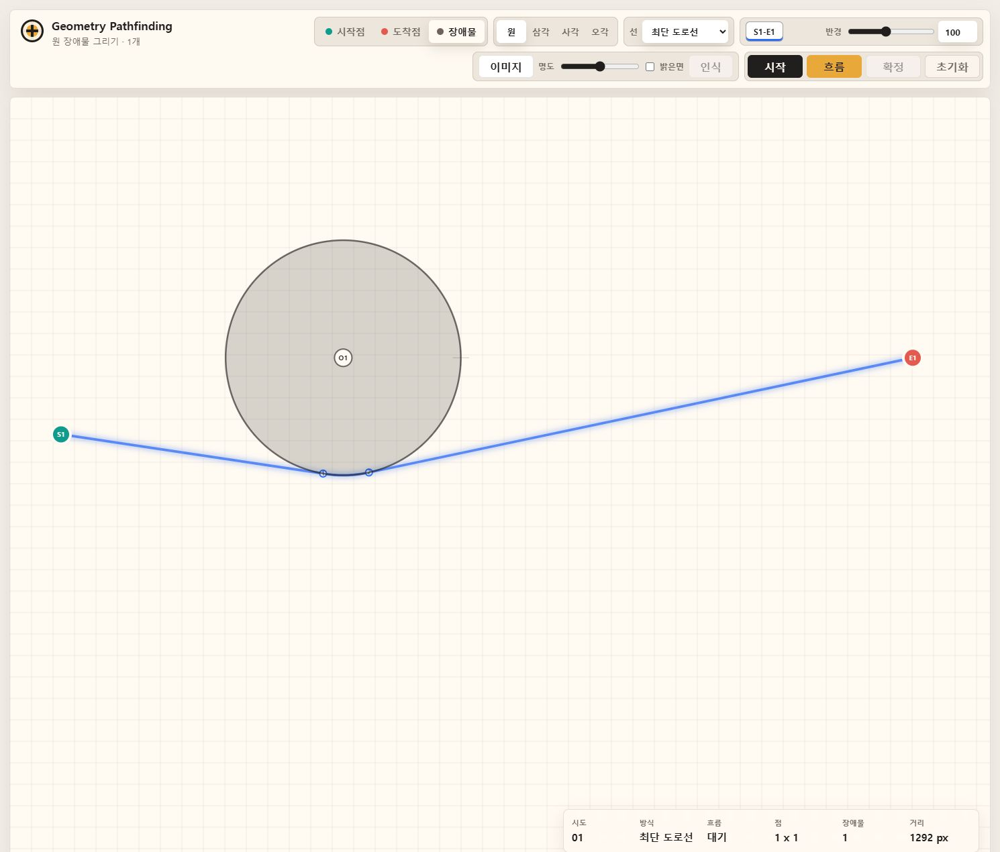
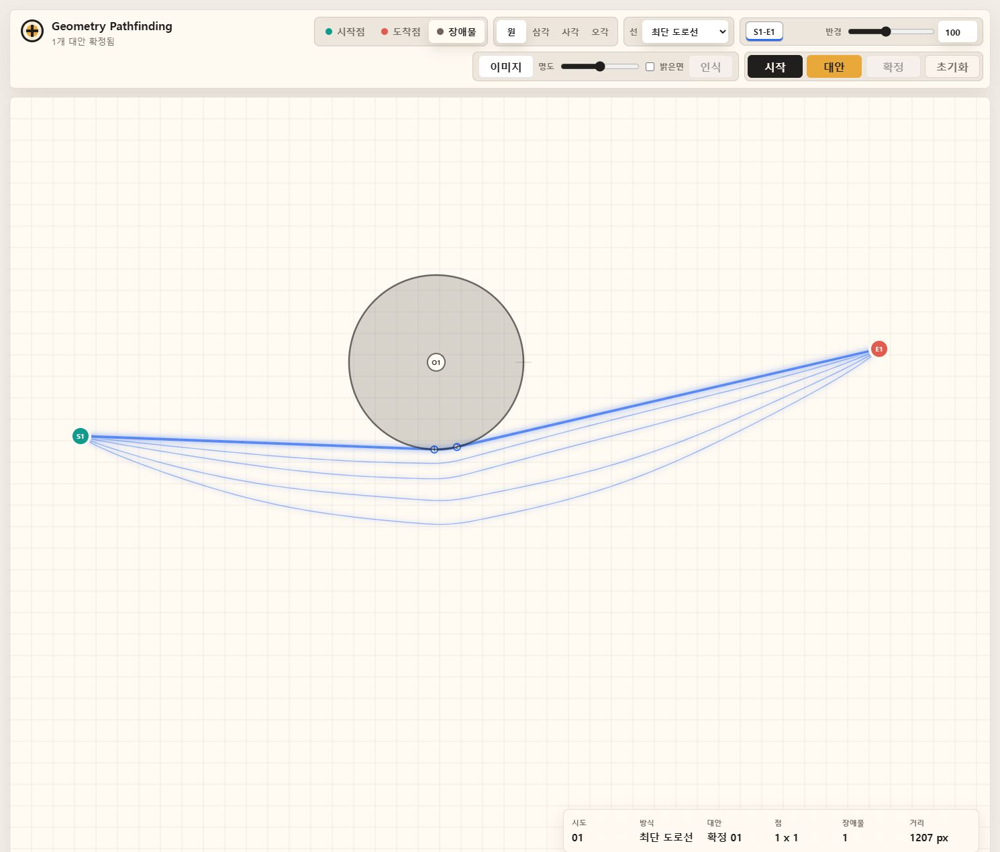

Automation Experiment 01
Pathfinding Automation
시작점, 도착점, 장애물을 캔버스에 배치하면 장애물을 피하는 경로와 여러 대안 패턴을 계산합니다. BIM 공간 계획, 동선 검토, 자동 배선/배관 경로 탐색 같은 아이디어를 웹에서 빠르게 검증하기 위한 실험입니다.


실행 캔버스
시작점 추가 중 · 시작 0 / 도착 0
Automation Experiment 01
시작점, 도착점, 장애물을 캔버스에 배치하면 장애물을 피하는 경로와 여러 대안 패턴을 계산합니다. BIM 공간 계획, 동선 검토, 자동 배선/배관 경로 탐색 같은 아이디어를 웹에서 빠르게 검증하기 위한 실험입니다.


시작점 추가 중 · 시작 0 / 도착 0